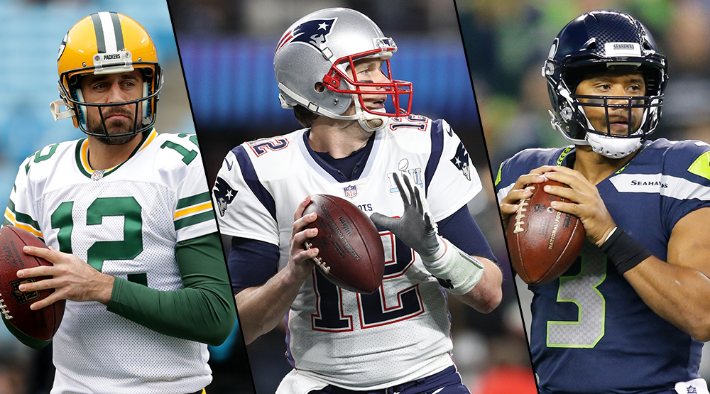

The Pass and the Pass Nots
There’s a common refrain about NFL offenses nowadays: it’s a passing league. With each season, it seems that the collection of offenses employing run-heavy schemes dwindles as teams employing more pass-heavy offenses…